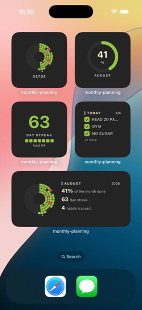
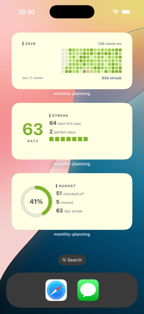
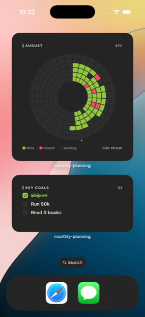
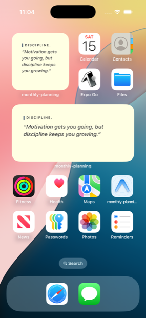
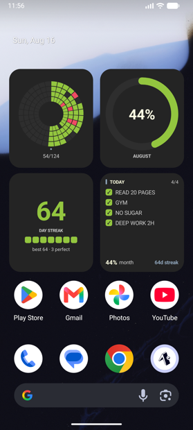

A month of habits,
drawn as a circle.
One sector per day, one ring per habit. Tick it or cross it — that is the entire ritual, and the month fills in behind you.
Free and open-source, and it runs entirely on the phone. There is no account, because there is nothing an account would be for.
凛 — dignity in showing up, day after day.
Pre-filled with sample marks; today is yours. A demo of this page, not a web version of the app. There isn’t one.
Built for myself.
Open to everyone.
Nothing you write here leaves your phone unless you ask it to. No analytics, no trackers, no crash reporters, no ad SDKs, and no account: no name, no email, no password. Your habits, notes and goals live in local storage on the device.
The source stays public for as long as this app exists. That is a promise about the licence, not just the current state of the repo.
And if something here annoys you, change it. Fork it, strip out the parts you don’t want, build the version you would rather use. You don’t need permission and you don’t need to ask.
The refusals
- analytics
- trackers
- crash reporters
- ad SDKs
- accounts
- passwords
- email addresses
- anything readable leaving the phone
This page, right now
0
third-party requests
| Origin | File | Size |
|---|
Everything the browser has fetched since this page loaded, as it reports it. The fonts are served from this origin and there is no analytics script to list. Go back up, mark a few cells, and come back. The number does not move.
Credit is entirely optional, and I mean that. I’ll just be here, reading every fork’s commit history like it’s a group chat I wasn’t invited to but am definitely still in.
Habits don’t break.
They fade.
Nobody quits on purpose. You miss a Tuesday, then most of a week, and by the time it registers there is nothing to point at. A grid remembers what memory quietly rounds off.
And a blank square tells you what happened, never why, so every month keeps room for notes, and “travel weeks are hard” stops being a vague feeling and turns into something you can plan around.
A run of check-ins, thinning out. Sample data, not a real month.
Sample data, not a real month.
One sector per day.
One ring per habit.
The circle is divided into one sector for each day of the month, running clockwise from twelve o’clock, and one ring for each habit, with the first habit innermost. Tap a cell to cycle it: pending, then done, then missed, then back to pending.
Today’s date is picked out in the accent colour, and today is the only day you can mark. A chart you can fill in afterwards records what you wish had happened.
With fewer than six habits the extra rings are still drawn, empty, so the grid keeps its shape rather than collapsing into a thin band.
- 1A sector: one day, clockwise from twelve
- 2A ring: one habit, the first innermost
- 3Green done, red missed
- 4Today, and only today, is markable
The same marks, from further back.
All three panels read the marks you made at the top of this page. Change one and all three change. In the app they are the same stored month: history is worked out from what is already there rather than written down twice.
Tracker
The daily check, for today. In the app the arrows walk back through the month; every day but today is read-only.
History pages back six months at a time, and this demo only has one.
The half with teeth.
Tasks with a date and a time on them, below the daily check. Each row shows how long is left, and a bar that fills over the final week, so the pressure is visible between the colour bands as well as through them.
File the quarterly return
Drag it. The wording, the bar and the colour are the app’s own, from
src/deadlines.ts.
Reminders escalate
Getting louder as the date approaches is the whole feature, so the spacing tightens rather than staying even.
The daily nudges
Three fixed times, 12:30 and 17:30 and 20:45, and only while something is still unmarked. Once the day is accounted for they are replaced by a single note saying so. Deadlines live on their own Android notification channel, so the habit nudges can be muted without losing them.
The grid has a hole in it and it’s shaped exactly like today.
The app’s own 17:30 line, as it goes out on a day queued ahead.
Twenty-eight notifications are budgeted, five per task, because iOS keeps only the 64 soonest pending local notifications.
Remembering is not your job.
Eight of them on both platforms, plus Lock Screen accessories on iOS: the radial tracker, the year, month progress, the streak, today’s check, key goals, the daily quote and what is due next.
They are drawn from the same snapshot the app writes, so they cannot disagree with it, and they follow the theme chosen in Settings rather than the system’s.
These captures predate the deadlines widget, so they are not all eight.





One code, and nothing to sign into. Not wired up yet
A backup is for carrying your months to your next phone, and nothing else. There is no account behind it: no name, no email, no password.
Write the code down. Nobody can look it up for you, not me and not Google, and without it the backup stays encrypted forever. There is deliberately no way to reset it, because a way to reset it would be a way in.
There is no backend behind this build. The code is written and tested, but Firebase's config files are not in the repo, so a phone built from it has nowhere to send anything until you point it at a project of your own. The app is fully usable without ever making a backup, which is how most people will use it.
The anonymous sign-in in src/sync.ts is a throwaway id carrying an App Check
token, not an account.
A code, generated here
Generated in your browser a moment ago by
crypto.getRandomValues, and it has not left it. This page has no server to
send it to; see the ledger further up.
XChaCha20-Poly1305, HKDF-SHA256, a 120-bit code.
The entire server side
rules_version = '2'; // The entire server side of the app.//// There are no accounts. Nobody gives a name, an email or a password. When a// phone backs up, it signs in anonymously so the request carries an App Check// token and a throwaway uid, encrypts each record with a key derived from a// code that only the phone holds, and writes the ciphertext under an id that// is a one-way derivation of the same code. A second phone that is given the// code derives the same id and the same key, and can read it all back.//// So the database holds no identities and nothing readable, and these rules// only have to guarantee three things://// 1. nothing is reachable without a signed-in app (App Check is enforced in// the console, not here; rules cannot see it);// 2. nothing can be discovered — every read names its exact path, and the// id space is 2^256, so knowing an id *is* the credential;// 3. every record has exactly the shape and size the app writes, so a// script cannot park arbitrary data here or bloat a backup.//// Deliberately not enforced, because it cannot be: how many backups one// install creates. That is App Check's job, and on the free plan the worst// outcome is a day's quota gone, never a bill. service cloud.firestore { function signedIn() { return request.auth != null; } // hex(SHA-256) of the code's id-derivation: 64 lowercase hex characters function isBackupId(id) { return id.matches('^[0-9a-f]{64}$'); } // one document per calendar month, so an id also bounds a backup at 1212 of them function isMonthId(id) { return id.matches('^20[0-9]{2}-(0[1-9]|1[0-2])$'); } // An encrypted record. `iv` is the nonce (12 to 24 bytes, base64), `ct` the // ciphertext (base64), `v` the format version, `updatedAt` the server's clock — // never the phone's, so two phones sharing a code can tell which wrote last. function isBlob(data, maxChars) { return data.keys().hasOnly(['v', 'iv', 'ct', 'updatedAt']) && data.keys().hasAll(['v', 'iv', 'ct', 'updatedAt']) && data.v == 1 && data.iv is string && data.iv.size() >= 16 && data.iv.size() <= 32 && data.ct is string && data.ct.size() > 0 && data.ct.size() <= maxChars && data.updatedAt == request.time; } match /databases/{database}/documents { match /backups/{backup}/months/{month} { // reading, or listing the months of one backup whose id you already know allow get: if signedIn() && isBackupId(backup) && isMonthId(month); allow list: if signedIn() && isBackupId(backup); // a month in the clear is a few KB; base64 ciphertext of one stays well under this allow create, update: if signedIn() && isBackupId(backup) && isMonthId(month) && isBlob(request.resource.data, 65536); allow delete: if signedIn() && isBackupId(backup); } // the deadline list travels as one record match /backups/{backup}/tasks/{doc} { allow get: if signedIn() && isBackupId(backup) && doc == 'current'; allow create, update: if signedIn() && isBackupId(backup) && doc == 'current' && isBlob(request.resource.data, 262144); allow delete: if signedIn() && isBackupId(backup) && doc == 'current'; } // Everything else — the top-level backups collection, collection-group // queries, any path not named above — is unreachable. Firestore denies by // default; this just says so where a reader will look for it. match /{document=**} { allow read, write: if false; } }}
Eighty-one lines, printed in full rather than excerpted, because “short enough to read in a minute” is only true if you are actually let read it.
There is no store link yet.
It isn’t on the App Store or Google Play. What there is, is the repo. Clone it and build it onto your own phone. The widgets and the backup are native, so it needs a development build rather than Expo Go.
Build it
npm install npx expo start npx expo run:ios # needs Xcode npx expo run:android # needs Android Studio
Check it
npm test npm run test:rules
The screens are checked by looking at them; this is for the arithmetic underneath, which looks the same whether or not it is right.